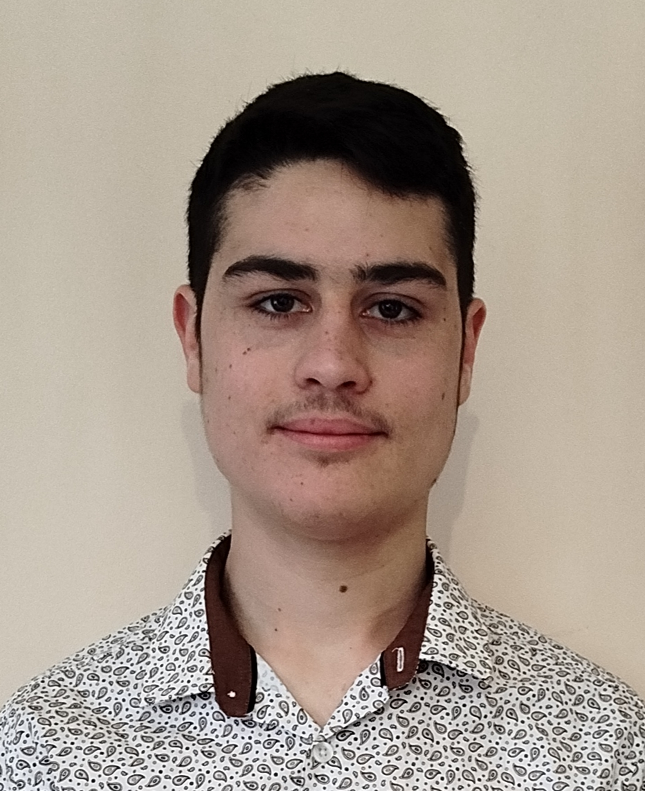

Bonjour et bienvenue sur mon portfolio.
Je m'appelle Noé Kerloch, j'ai 18 ans et je suis originaire de Saint Gildas.
Étant passionné par l’informatique et les jeux-vidéos depuis de nombreuses années, je me suis naturellement dirigé
vers un bac Technologique avec la spécialité SIN (systèmes d'information et numérique) au lycée.
Après avoir obtenu le bac avec mention bien en 2025, j’ai intégré le BUT informatique de Nantes dans l'espoir d'intégrer par la suite une école d'ingénieur.
Durant cette premiere année de BUT informatique, j'ai pu approfondir mes connaissances
en développement et découvrir de nouvelles technologies. J'ai ainsi participé à plusieurs projets d'équipe qui m'ont permis de
mettre en pratique mes compétences et de les enrichir.
Plus tard, j'envisage de me spécialiser en développement d'IA (intelligence artificielle)
Si vous souhaitez en savoir plus sur moi, mes compétences et mes différents projets, ou tout simplement savoir comment me
contacter, n'hésitez pas à explorer ce site et à me faire des retours.
Bonne lecture et à bientôt.
